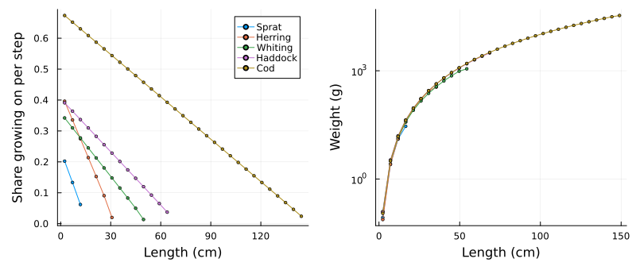
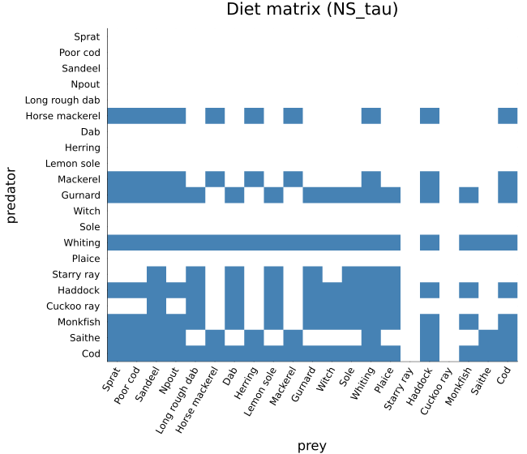
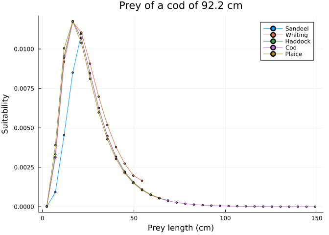
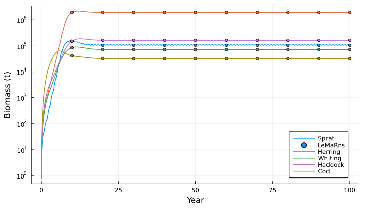
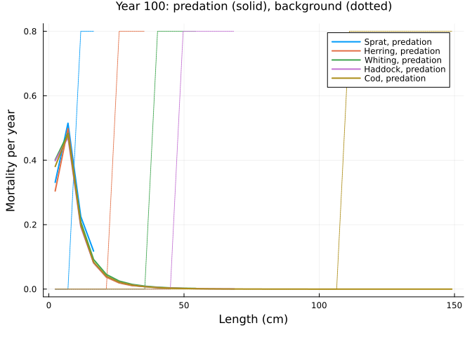
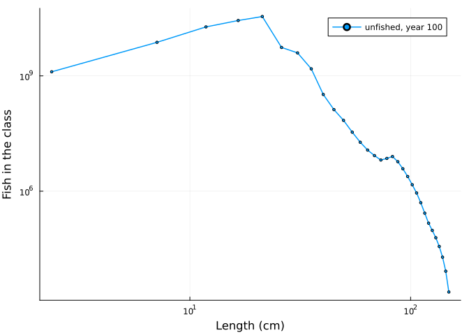
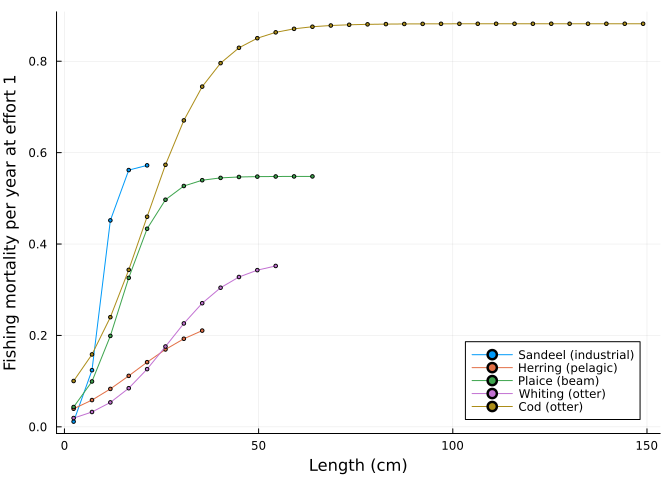
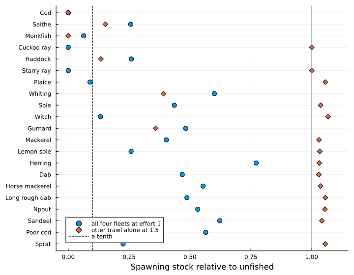
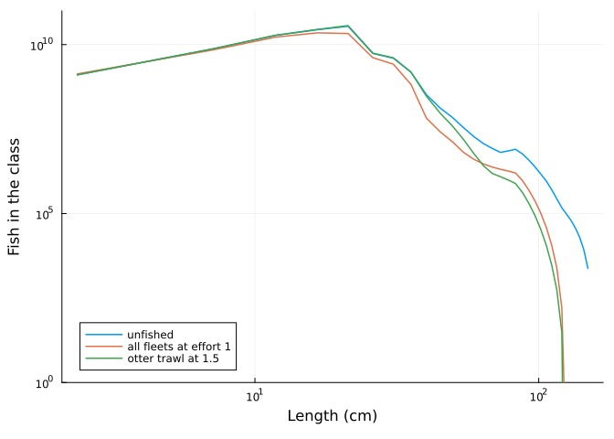

North Sea fish by length: predation by size in the LeMans model
Simon Frost
- Twenty-one species in length classes
- The life cycle as length classes
- Predation by size
- Pools with a value for each predator class
- The unfished community
- Fishing
- Comparison with LeMaRns
- What is measured and what is assumed
- Where this model and its sources part
- Sources read
- References
ENV["GKSwstype"] = "100"
using MatrixCommunityModels
using LinearAlgebra, Printf
using Plots
BLAS.set_num_threads(1)Twenty-one species in length classes
LeMans (Length-based Multispecies analysis by numerical simulation; Hall et al. 2006) is a model of a fish community in which every fish is counted by its species and its length. Fish grow from one length class to the next, spawn when mature, are caught by fleets that select by length, and are eaten by other fish according to how big the predator is and how big the prey. Thorpe et al. (2015) set it up for 21 species of the North Sea, and the R package LeMaRns (Spence et al. 2020) implements it with those data.
This vignette rebuilds the model and checks it against LeMaRns 0.1.2, run in R on its own data (test/reference/R/run_lemans_reference.R). The equations, defaults and order of operations were read from the package’s R and C++ source.
Each species is a projection net whose stages are its length classes. Predation is the only link between species, and it depends on size: how fast a sprat of 7 cm is eaten depends on how many cod, whiting and saithe of each length there are, and on how much other prey of suitable size each of those predators finds. The pools of this model therefore hold one value for each predator length class, rather than one number.
p = lemans_parameters()
println("species classes Linf (cm) k (1/yr) Lmat (cm) fleet")
for (sp, name) in zip(p.species, p.names)
f, i = p.fish[sp], findfirst(==(sp), p.species)
@printf("%-22s %7d %9.2f %8.3f %9.2f %s\n", name, f.classes, f.Linf, LEMANS_NORTH_SEA.k[i],
LEMANS_NORTH_SEA.Lmat[i], f.gear)
end
println("class width ", round(p.upper[1]; digits = 3), " cm; time step ", p.dt, " year")species classes Linf (cm) k (1/yr) Lmat (cm) fleet
Sprat 4 16.55 0.681 12.14 industrial
Npout 6 23.75 0.849 17.21 industrial
Sandeel 5 23.57 1.000 12.16 industrial
Poor cod 5 23.00 0.520 15.00 otter
Long rough dab 6 25.00 0.340 15.00 beam
Dab 7 32.40 0.536 12.96 beam
Herring 8 33.35 0.606 23.39 pelagic
Horse mackerel 6 28.00 0.380 19.00 pelagic
Lemon sole 8 37.00 0.420 27.00 beam
Sole 10 46.41 0.284 20.96 beam
Mackerel 9 38.00 0.510 26.00 pelagic
Whiting 12 52.50 0.323 21.39 otter
Witch 10 44.00 0.200 29.00 beam
Gurnard 10 42.97 0.266 17.67 otter
Plaice 14 65.32 0.122 22.22 beam
Starry ray 14 66.00 0.230 46.00 beam
Haddock 15 70.65 0.271 26.91 otter
Cuckoo ray 20 92.00 0.110 59.00 beam
Monkfish 23 106.00 0.180 61.00 otter
Cod 32 149.87 0.216 54.39 otter
Saithe 26 118.94 0.175 48.61 otter
class width 4.73 cm; time step 0.1 yearThe 32 length classes have equal widths and run from zero to 1.01 times the largest asymptotic length, that of cod. A species uses the classes up to the one that holds its own asymptotic length, Linf: four for sprat, 32 for cod. The 21 species have 250 length classes between them.
The life cycle as length classes
In each time step of a tenth of a year, in this order:
- in the first step of a year, recruits join the smallest length class: a hockey-stick function of the spawning stock biomass,
min(a S, b)million fish forSthousand tonnes; - fish die of background mortality
M1, fishingFand predationM2, all at once: a shareexp(-(M1 + F + M2))of each class survives the step; - a fixed share of the survivors of each class,
leaving, grows into the next class.
lemans_fish writes this as a net with three transitions over the length classes, length1, length2, …:
life = ValuedProjectionNet(cells,
:staying => [(c => c) => 1 - g for (c, g) in zip(cells, leaving)],
:growing => [(cells[j] => cells[j + 1]) => leaving[j] for j in 1:(m - 1)],
:spawning => [(c => cells[1]) => w * (1 - leaving[1]) for (c, w) in spawners;
(c => cells[2]) => w * leaving[1] for (c, w) in spawners])
net = births(respond(life,
:staying => ctx -> by_trait(fish, surviving(ctx)),
:growing => ctx -> by_trait(fish, surviving(ctx)),
:spawning => ctx -> per_gram(ctx) * first(surviving(ctx))), :spawning)surviving(ctx) is exp(-Z) for each length class, with Z read from the pools and the environment (below). The recruits of a year are shared among the spawners in proportion to their mature weight (per_gram is recruits per gram of spawning stock), and in the step they are born they die and grow as the smallest fish do, which is why spawning reaches the first two classes. The environment of a step says whether it is the first of a year and gives the fishing effort of each fleet.
Growth
A fish of length $L$ grows as von Bertalanffy says, $dL/dt = k (L_\infty - L)$, so it takes $\frac{1}{k}\log\frac{L_\infty - l}{L_\infty - u}$ years to cross a class with bounds $l$ and $u$. LeMans moves the share leaving = 0.1 year divided by that time into the next class each step. The largest share is 0.67, so no class is crossed in less than a step. Weight is $W_a L^{W_b}$ g at the midpoint of the class (in the last class, half way between its lower bound and $L_\infty$).
shown = (:sprat, :herring, :whiting, :haddock, :cod)
labels = Dict(zip(p.species, p.names))
lengths(sp) = p.mid[1:p.fish[sp].classes]
a = plot(; xlabel = "Length (cm)", ylabel = "Share growing on per step", legend = :topright)
b = plot(; xlabel = "Length (cm)", ylabel = "Weight (g)", yscale = :log10, legend = false)
for sp in shown
f = p.fish[sp]
plot!(a, lengths(sp)[1:(end - 1)], f.leaving[1:(end - 1)]; marker = :circle, ms = 2, label = labels[sp])
plot!(b, lengths(sp), f.weight; marker = :circle, ms = 2)
end
plot(a, b; layout = (1, 2), size = (800, 340), bottom_margin = 6Plots.mm, left_margin = 6Plots.mm)
Each class also has a ration: the food a fish needs in a step to put on the weight that growth requires, its gain in weight divided by a growth efficiency that falls from 0.5 at length zero towards zero at $L_\infty$. The ration drives predation.
Predation by size
A predator eats prey of about $10^{-2.25}$, one 178th, of its own weight. The preference of a predator of weight $w_p$ for prey of weight $w_q$ is $\exp\left(-\frac{(\log_{10}(w_q/w_p) + 2.25)^2}{2 \times 0.5}\right)$, allowed only between the species of a diet matrix, and scaled to sum to one over all prey classes of all species: the suitability. Fish in the smallest length class eat nothing.
order = sortperm(p.species; by = sp -> p.fish[sp].Linf)
heatmap(Int.(LEMANS_NORTH_SEA.diet[order, order]); yflip = true, color = cgrad([:white, :steelblue]), colorbar = false,
xticks = (1:21, p.names[order]), yticks = (1:21, p.names[order]), xrotation = 60, size = (650, 560),
xlabel = "prey", ylabel = "predator", title = "Diet matrix (NS_tau)")
Ten species eat fish of the model; the other eleven eat only the food outside it. Cod and whiting eat almost every species. A cod in its twentieth length class (about 92 cm and 8 kg) prefers prey of about 45 g, one 178th of its weight; the suitability of each prey class, of each species it eats, is:
row = findfirst(==((:cod, 20)), p.predators)
plot(; xlabel = "Prey length (cm)", ylabel = "Suitability", legend = :topright,
title = "Prey of a cod of $(round(p.mid[20]; digits = 1)) cm")
for sp in (:sandeel, :whiting, :haddock, :cod, :plaice)
plot!(lengths(sp), p.fish[sp].suitability[row, :]; marker = :circle, ms = 2, label = labels[sp])
end
plot!()
The predation mortality of prey class $q$ in a step is
\[M2_q = \sum_{p} \frac{\textrm{ration}_p N_p \, s_{pq}}{\sum_{q'} s_{pq'} w_{q'} N_{q'} + \textrm{other}},\]
where the sums run over the length classes $p$ of every predator species and the length classes $q'$ of every prey species, $s$ is the suitability, $w$ the weight, $N$ the numbers, and “other” is the food outside the model ($1.2 \times 10^{12}$ g). Each predator class takes its ration from the prey it finds suitable, in proportion to their biomass, as long as there is food enough; this is a Holling type II response.
Pools with a value for each predator class
The two sums are what the species share. They are the two pools of the model, each with one value for each of the 250 predator classes (p.predators):
ration: the food the predators of that class need in a step, $\textrm{ration}_p N_p$;prey: the prey biomass they find suitable, $\sum_{q} s_{pq} w_q N_q$.
Each species adds its own fish to both, as predators and as prey, and reads both:
predation(pool) = suitability' * (pool.ration ./ (pool.prey .+ other))
species(sp, net; occupies = [:ration => needs, # a 250 × classes matrix of rations
:prey => prey]) # (n, env) -> 250 valuesA pool whose contributions are vectors is a vector: CategoricalPopulationDynamics adds them up as it adds numbers. A contribution can be a matrix of weights, one row for each element of the pool and one column per stage (here the ration of each class in the row of that predator class), or a function that returns a vector. prey is a function because the recruits of a year are prey in the step they join the smallest class, before predation (LeMaRns adds them first and computes M2 afterwards).
c = lemans_community(p)
n0 = state_vector(c, lemans_state(p)...)
pools = pool_totals(c, n0, (recruiting = false, effort = (;)))
(pools = pool_names(c), values_per_pool = length(pools.prey), states = length(c),
cod_class_20 = (needs_g = pools.ration[row], finds_g = pools.prey[row]))(pools = [:ration, :prey], values_per_pool = 250, states = 250, cod_class_20 = (needs_g = 1344.4042465327302, finds_g = 15414.148020212391))No species refers to another, and a community of any subset of the species is composed in the same way. The solvers log a vector pool for every step like any other (sol.pool_vectors[:prey] below).
The other possible designs were many scalar pools, one per predator class (500 named pools and a wiring diagram with 500 junctions, for the same arithmetic), or a single pool that is a function of the state of the whole community, which would have hidden which species contributes what. A vector-valued pool is the smaller change: a pool is still a sum of what each species contributes.
The unfished community
LeMaRns starts from a size spectrum in which the whole community holds $10^{10} L^{-5}$ fish in the class of midpoint $L$, shared among the species (its get_N0); the same state is lemans_state. Run for 100 years without fishing:
ref_dir = joinpath(pkgdir(MatrixCommunityModels), "test", "reference")
reference(file) = [split(l, ",") for l in readlines(joinpath(ref_dir, file))[2:end]]
number(x) = parse(Float64, x)
named = Dict(n => s for (n, s) in zip(p.names, p.species))
runs = reference("lemans_runs.csv")
names_in_order = species_names(c)
column(sp) = findfirst(==(sp), names_in_order)
unfished = project(c, n0, lemans_environment(100))
B = lemans_biomass(p, unfished) ./ 1e6 # tonnes
years = (0:1000) ./ 10
plot(; xlabel = "Year", ylabel = "Biomass (t)", yscale = :log10, legend = :bottomright, size = (720, 420))
for (k, sp) in enumerate(shown)
plot!(years, B[:, column(sp)]; color = k, lw = 1.5, label = labels[sp])
theirs = [(parse(Int, r[2]), number(r[4]) / 1e6) for r in runs
if r[1] == "unfished" && named[r[3]] == sp && parse(Int, r[2]) % 100 == 0]
scatter!(first.(theirs) ./ 10, last.(theirs); color = k, ms = 3, label = k == 1 ? "LeMaRns" : "")
end
plot!()
The lines are this package, the points LeMaRns (every ten years). From the small starting biomass the species grow for about ten years, overshoot a little, and settle within about twenty.
function apart(run, sol)
Bm, Sm = lemans_biomass(p, sol), lemans_biomass(p, sol; spawning = true)
worst = 0.0
for r in runs
r[1] == run || continue
k, i = parse(Int, r[2]) + 1, column(named[r[3]])
k <= size(Bm, 1) || continue
worst = max(worst, abs(Bm[k, i] / number(r[4]) - 1), abs(Sm[k, i] / number(r[5]) - 1))
end
return worst
end
year_end = [lemans_biomass(p, unfished; spawning = true)[1001, column(sp)] for sp in p.species]
year_before = [lemans_biomass(p, unfished; spawning = true)[991, column(sp)] for sp in p.species]
(largest_relative_difference_from_LeMaRns = apart("unfished", unfished),
largest_change_in_spawning_stock_over_year_100 = maximum(abs.(year_end ./ year_before .- 1)))(largest_relative_difference_from_LeMaRns = 2.6645352591003757e-15, largest_change_in_spawning_stock_over_year_100 = 2.220446049250313e-16)Over 1000 steps biomass and spawning stock biomass agree with LeMaRns to rounding. By year 100 the community repeats itself from year to year: the spawning stock at the end of the year equals that a year before to rounding.
The predation mortality at year 100 shows the size dependence: small fish are eaten, large ones are not, and the background mortality M1 acts on the largest quarter of each species’ classes.
settled = unfished.u[end, :]
M2 = lemans_predation(p, c, settled, (recruiting = false, effort = (;)))
plot(; xlabel = "Length (cm)", ylabel = "Mortality per year", legend = :topright)
for (k, sp) in enumerate(shown)
plot!(lengths(sp), M2[sp] ./ p.dt; color = k, lw = 2, label = "$(labels[sp]), predation")
plot!(lengths(sp), p.fish[sp].natural ./ p.dt; color = k, ls = :dot, label = "")
end
plot!(; title = "Year 100: predation (solid), background (dotted)", titlefontsize = 11)
The size spectrum of the whole community, numbers per length class summed over species, rises a little up to about 20 cm, where most species reach their largest numbers, and falls steeply beyond, where only the large predators remain:
spectrum(n) = [sum(j <= p.fish[sp].classes ? n[c.layout[sp]][j] : 0.0 for sp in names_in_order) for j in 1:32]
plot(p.mid, spectrum(settled); xscale = :log10, yscale = :log10, marker = :circle, ms = 2, lw = 1.5,
xlabel = "Length (cm)", ylabel = "Fish in the class", label = "unfished, year 100")
Fishing
Four fleets fish the North Sea in LeMaRns’s mixed-fishery data (Thorpe et al. 2016): an industrial fleet takes sprat, Norway pout and sandeel; otter trawlers the roundfish (cod, haddock, whiting, saithe, monkfish, gurnard, poor cod); beam trawlers the flatfish and rays; the pelagic fleet herring, mackerel and horse mackerel. Each species is caught by one fleet, with a logistic selectivity in length. The fishing mortality per year is the fleet’s effort times the species’ catchability.
plot(; xlabel = "Length (cm)", ylabel = "Fishing mortality per year at effort 1", legend = :bottomright)
for sp in (:sandeel, :herring, :plaice, :whiting, :cod)
plot!(lengths(sp), p.fish[sp].catchability; marker = :circle, ms = 2,
label = "$(labels[sp]) ($(p.fish[sp].gear))")
end
plot!()
From the unfished state at year 100, the community is fished for 50 years with every fleet at an effort of one, and, separately, with the otter trawl alone at an effort of 1.5. For comparison it is also run unfished for those 50 years.
fleet = (industrial = 1.0, otter = 1.0, beam = 1.0, pelagic = 1.0)
fished = project(c, settled, lemans_environment(50; effort = fleet))
otter = project(c, settled, lemans_environment(50; effort = (otter = 1.5,)))
left = project(c, settled, lemans_environment(50))
ssb(sol) = vec(sum(lemans_biomass(p, sol; spawning = true)[492:501, :]; dims = 1)) ./ 10 # the mean of the last year
relative_all = ssb(fished) ./ ssb(left)
relative_otter = ssb(otter) ./ ssb(left)
idx = [column(sp) for sp in p.species[order]]
scatter(relative_all[idx], 1:21; label = "all four fleets at effort 1", ms = 5, yticks = (1:21, p.names[order]),
xlabel = "Spawning stock relative to unfished", xlims = (-0.05, 1.15), size = (720, 560), legend = :bottomleft)
scatter!(relative_otter[idx], 1:21; label = "otter trawl alone at 1.5", ms = 5, marker = :diamond)
vline!([0.1]; color = :black, ls = :dash, label = "a tenth")
vline!([1.0]; color = :grey, ls = :dot, label = "")
println("species all fleets otter alone")
for sp in p.species[order]
@printf("%-22s %10.3f %11.3f\n", labels[sp], relative_all[column(sp)], relative_otter[column(sp)])
end
collapsed(rel) = [labels[sp] for sp in p.species if rel[column(sp)] < 0.1]
(below_a_tenth_with_all_fleets = collapsed(relative_all), below_a_tenth_with_otter_alone = collapsed(relative_otter))species all fleets otter alone
Sprat 0.226 1.056
Poor cod 0.565 0.345
Sandeel 0.622 1.042
Npout 0.532 1.054
Long rough dab 0.487 1.056
Horse mackerel 0.554 1.036
Dab 0.468 1.029
Herring 0.772 1.031
Lemon sole 0.258 1.033
Mackerel 0.403 1.030
Gurnard 0.483 0.359
Witch 0.132 1.067
Sole 0.436 1.037
Whiting 0.600 0.391
Plaice 0.089 1.056
Starry ray 0.000 1.000
Haddock 0.259 0.134
Cuckoo ray 0.000 1.000
Monkfish 0.063 0.000
Saithe 0.257 0.153
Cod 0.000 0.000
(below_a_tenth_with_all_fleets = ["Plaice", "Starry ray", "Cuckoo ray", "Monkfish", "Cod"], below_a_tenth_with_otter_alone = ["Monkfish", "Cod"])With every fleet at an effort of one, every species loses spawning stock, and five fall below a tenth of their unfished level: the two rays and plaice, taken by the beam trawl, and cod and monkfish, taken by the otter trawl. The rays and cod, large and slow to mature, are close to gone after 50 years. The otter trawl alone removes cod and monkfish and halves or more the other roundfish, while every species it does not catch gains a few per cent, released from part of the predation by the large roundfish. No species of the model eats the two rays (their columns of the diet matrix are empty), so they do not change. The size spectrum shows the loss of large fish directly, and so does the large fish indicator, the share of the biomass in fish longer than 40 cm:
plot(p.mid, spectrum(left.u[end, :]); xscale = :log10, yscale = :log10, lw = 1.5, label = "unfished",
xlabel = "Length (cm)", ylabel = "Fish in the class", ylims = (1, 1e11), legend = :bottomleft)
plot!(p.mid, spectrum(fished.u[end, :]); lw = 1.5, label = "all fleets at effort 1")
plot!(p.mid, spectrum(otter.u[end, :]); lw = 1.5, label = "otter trawl at 1.5")
function large_fish_indicator(n)
big = sum(dot(p.fish[sp].weight .* (lengths(sp) .> 40), n[c.layout[sp]]) for sp in names_in_order)
return big / sum(dot(p.fish[sp].weight, n[c.layout[sp]]) for sp in names_in_order)
end
(unfished = large_fish_indicator(left.u[end, :]), all_fleets = large_fish_indicator(fished.u[end, :]),
otter_alone = large_fish_indicator(otter.u[end, :]))(unfished = 0.1425226299621174, all_fleets = 0.04383607165926597, otter_alone = 0.07280460020694654)The indicator falls from 0.14 unfished to 0.07 with the otter trawl alone and to 0.04 with every fleet. Spence et al. (2020) found, over 625 combinations of effort, that the number of stocks below a tenth of their unfished spawning stock depends mostly on the otter and beam fleets, and that the large fish indicator follows the otter fleet. The two runs here agree with that in direction; they are two points, not that analysis.
Comparison with LeMaRns
classes_ref = reference("lemans_classes.csv")
start = Dict(lemans_state(p))
relative(mine, theirs) = theirs == 0 ? abs(mine) : abs(mine / theirs - 1) # absolute where LeMaRns has zero
derived = maximum(classes_ref) do r
f, j = p.fish[named[r[1]]], parse(Int, r[2])
mine = (f.weight[j], f.leaving[j], f.ration[j], f.mature[j], f.natural[j], f.catchability[j], start[named[r[1]]][j])
theirs = number.(r[[6, 7, 8, 9, 10, 11, 12]])
maximum(relative(m, t) for (m, t) in zip(mine, theirs))
end
suitability = maximum(reference("lemans_suitability.csv")) do r
q = findfirst(==((named[r[1]], parse(Int, r[2]))), p.predators)
relative(p.fish[named[r[3]]].suitability[q, parse(Int, r[4])], number(r[5]))
end
M2_0 = lemans_predation(p, c, n0, (recruiting = false, effort = (;)))
predation_start = maximum(relative(M2_0[named[r[1]]][parse(Int, r[2])], number(r[13])) for r in classes_ref)
calendar = findall(e -> e.recruiting, lemans_environment(100)) == [parse(Int, r[1]) for r in reference("lemans_recruitment_steps.csv")]
states = reference("lemans_state.csv")
final_N = maximum(abs(settled[c.layout[named[r[2]]]][parse(Int, r[3])] / number(r[4]) - 1)
for r in states if r[1] == "unfished" && number(r[4]) > 0)
@printf("weights, growth, rations, maturity, M1, catchability, starting state (250 classes): %.1e\n", derived)
@printf("suitabilities (1680 pairs): %.1e\n", suitability)
@printf("predation mortality at the starting state: %.1e\n", predation_start)
println("steps with recruitment over 100 years: ", calendar ? "the same" : "different")
@printf("unfished, 1000 steps, biomass and spawning stock biomass: %.1e\n", apart("unfished", unfished))
@printf("unfished, numbers in every class at step 1000: %.1e\n", final_N)
@printf("all fleets at effort 1, 500 steps: %.1e\n", apart("fished", fished))
@printf("otter trawl at 1.5, 500 steps: %.1e\n", apart("otter", otter))weights, growth, rations, maturity, M1, catchability, starting state (250 classes): 4.8e-15
suitabilities (1680 pairs): 1.0e-15
predation mortality at the starting state: 8.9e-16
steps with recruitment over 100 years: the same
unfished, 1000 steps, biomass and spawning stock biomass: 2.7e-15
unfished, numbers in every class at step 1000: 2.9e-15
all fleets at effort 1, 500 steps: 1.4e-14
otter trawl at 1.5, 500 steps: 7.4e-15The fished runs here start from this package’s state at year 100 and LeMaRns’s from its own, which agree to rounding. The values are largest relative differences.
| Check | Agreement |
|---|---|
| Length classes, weights, growth shares, rations, maturity, background mortality, catchability, starting state | to rounding (below 1e-14) |
| Suitabilities of whiting, cod and saithe for all their prey classes | to rounding |
| Predation mortality of every class at the starting state | to rounding |
| Steps at which recruits enter | the same |
| Unfished, 100 years; fished by all fleets and by the otter trawl, 50 years each | biomass and spawning stock biomass to rounding (about 1e-14) |
What is measured and what is assumed
| Quantity | Source |
|---|---|
| $L_\infty$, $k$, length-weight parameters, length at maturity, by species | NS_par (Thorpe et al. 2015), from North Sea surveys and the literature; not checked against the originals here |
Hockey-stick recruitment parameters a, b | NS_par; calibrated by Thorpe et al. (2015) against stock assessments, as far as the documentation says |
| Diet matrix | NS_tau (Thorpe et al. 2015), from stomach data |
Fleets, maximum catchability, selectivity slope and L50 | NS_mixed_fish, NS_eta, NS_L50 (Thorpe et al. 2016) |
| Other food, $1.2 \times 10^{12}$ g | NS_other; calibrated |
| Preferred predator-prey weight ratio $10^{-2.25}$, preference variance 0.5 | LeMaRns defaults, the values of Thorpe et al. (2015) |
| Growth efficiency 0.5 at length zero, decay exponent 0.11 | LeMaRns defaults |
| Background mortality 0.8 per year in the largest quarter of the classes | LeMaRns default (std_RNM) |
| Maturity ogive slope 10 per cm | LeMaRns default |
| Fishing efforts used here (1 for every fleet; 1.5 for the otter trawl) | chosen for illustration |
Where this model and its sources part
- The model is LeMaRns’s, not that of Hall et al. (2006) or Thorpe et al. (2015), neither of which was read. Spence et al. (2020) say that every default but the diet matrix is that of Thorpe et al. (2015).
- LeMaRns evaluates the logistic selectivity at the upper bound of each length class, not its midpoint: its
LeMansParampassesmid, l_bound, u_boundtocalc_Qby position, where the formal arguments are in the orderl_bound, u_bound, mid. This package does the same by default, so that the runs agree;lemans_parameters(; selectivity_at = :mid)evaluates at the midpoint. Which was intended is not known. - In the last length class LeMaRns computes the growth efficiency with a fixed 0.5 rather than its argument
growth_eff; heregrowth_effis used throughout. The two agree at the default. - Only what the North Sea setup of LeMaRns uses is written here: hockey-stick recruitment,
std_RNMbackground mortality, logistic selectivity, one fleet per species. LeMaRns also offers Ricker, Beverton-Holt, linear and constant recruitment, constant and linear background mortality, other selectivity curves and several curves per species. Its catch, indicators and plotting functions are not reproduced; the large fish indicator above is computed directly. - The
pred_sigmaof LeMaRns divides the squared log ratio without being squared, so it is the variance of the preference, not its width.
Sources read
The R and C++ source of LeMaRns 0.1.2 (CRAN tarball) was read in full: LeMansParam, calc_phi, calc_ration_growthfac, calc_mature, calc_M1, calc_prefs, calc_suit_vect, calc_Q, calc_M2 (C++), calc_growth, the recruitment functions, get_N0 and run_LeMans, its documentation of the data sets, and its vignette. Spence et al. (2020) was read in part, from the publisher’s web page: its text, without the equations (images there) or the supporting information. Hall et al. (2006), Thorpe et al. (2015) and Thorpe et al. (2016) were not read.
References
Hall, S. J., Collie, J. S., Duplisea, D. E., Jennings, S., Bravington, M. & Link, J. (2006). A length-based multispecies model for evaluating community responses to fishing. Canadian Journal of Fisheries and Aquatic Sciences 63, 1344-1359. https://doi.org/10.1139/f06-039
Spence, M. A., Bannister, H. J., Ball, J. E., Dolder, P. J., Griffiths, C. A. & Thorpe, R. B. (2020). LeMaRns: A Length-based Multi-species analysis by numerical simulation in R. PLoS ONE 15, e0227767. https://doi.org/10.1371/journal.pone.0227767
Spence, M. A., Bannister, H. J., Ball, J. E., Dolder, P. J. & Thorpe, R. B. (2019). LeMaRns: Length-Based Multispecies Analysis by Numerical Simulation. R package version 0.1.2, GPL-3. https://CRAN.R-project.org/package=LeMaRns
Thorpe, R. B., Le Quesne, W. J. F., Luxford, F., Collie, J. S. & Jennings, S. (2015). Evaluation and management implications of uncertainty in a multispecies size-structured model of population and community responses to fishing. Methods in Ecology and Evolution 6, 49-58.
Thorpe, R. B., Dolder, P. J., Reeves, S., Robinson, P. & Jennings, S. (2016). Assessing fishery and ecological consequences of alternative management options for multispecies fisheries. ICES Journal of Marine Science 73, 1503-1512.